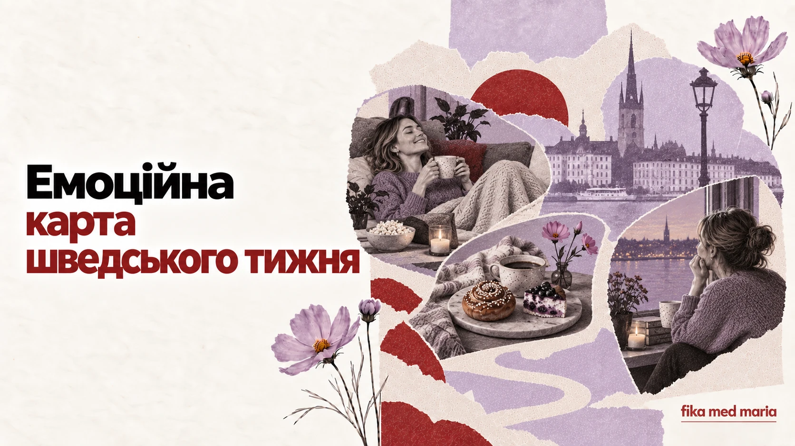

Від fredagsmys до söndagsångest: емоційна карта шведського тижня

Календар показує дні. Мова показує, що ми від них очікуємо.
У шведській є слова й звички, які створюють емоційний сценарій тижня: маленька середа, затишна п'ятниця, суботні цукерки й недільна тривога. Разом вони розповідають про шведське повсякдення більше, ніж список офіційних свят.
Måndag: почати спочатку
Понеділок має звичну репутацію важкого дня.
Det känns verkligen som måndag.
Сьогодні справді відчувається як понеділок.
Якщо хтось запитує Hur är läget?, цілком природно відповісти:
Jo då, lite trött bara. Det är ju måndag.
Та нормально, просто трохи втомлена. Понеділок же.
Частка ju тут створює спільне розуміння: ми обоє знаємо, що понеділок усе пояснює.
Lillördag: маленька субота посеред тижня
Середу іноді називають lillördag — маленька субота. Історичні пояснення можуть відрізнятися, але в сучасному вжитку слово часто означає можливість зробити серед тижня щось приємніше й святковіше: зустрітися, піти кудись або дозволити собі келих вина.
Ska vi gå ut? Det är ju lillördag.
Це не обов'язковий загальнонаціональний ритуал. Швидше культурно впізнавана назва, якою можна жартома виправдати середу, що поводиться як субота.
Torsdag: майже п'ятниця
Четвер часто існує у передчутті вихідних. У традиційній кухні з ним пов'язують гороховий суп і млинці — ärtsoppa och pannkakor.
У сучасній розмові важливіше інше відчуття:
Snart är det helg.
Скоро вихідні.
Це проста фраза, але вона показує, як тиждень уже повертає в бік відпочинку.
Fredagsmys: затишок як план
Fredagsmys складається з fredag і mys. Це не просто «затишна п'ятниця», а впізнаваний формат завершення тижня: дім, проста їжа, снеки, фільм, родина або близькі люди.
Vi ska bara vara hemma och ha fredagsmys.
Ми просто будемо вдома й влаштуємо затишний п'ятничний вечір.
Слово bara тут не знецінює план. Навпаки: після робочого тижня «просто бути вдома» може бути саме тим, чого хочеться найбільше.
Lördagsgodis: солодке за розкладом
Lördagsgodis — суботні цукерки, особливо пов'язані з дитячою звичкою їсти солодощі саме в суботу.
У магазині можна побачити lösgodis — цукерки на вагу, з яких кожен збирає власну суміш. Для дитини вибір може бути окремим ритуалом, а для дорослого — ностальгією.
Корисні фрази:
Får jag välja lördagsgodis?
Можна я виберу суботні солодощі?
Vilken är din favorit?
Яка твоя улюблена?
Söndagsångest: коли вихідні ще не закінчилися, але вже закінчуються
Söndagsångest — недільна тривога перед новим робочим або навчальним тижнем.
Це може бути справжнє сильне хвилювання, а може — напівжартівливе небажання прощатися з вихідними.
Jag får alltid lite söndagsångest på kvällen.
Увечері в мене завжди з'являється трохи недільної тривоги.
Зверніть увагу на lite: воно пом'якшує висловлювання й робить його розмовним.
Навіщо вчити такі слова
Вони не входять до набору «сто слів, без яких неможливо вижити». Але саме вони допомагають перейти від функціональної мови до соціальної.
Знаючи fredagsmys, ви не лише розумієте слово. Ви розумієте, чому колега радісно говорить, що на вихідних нічого не планує. Знаючи söndagsångest, можете підтримати легку розмову в понеділок.
Закінчіть фрази:
- På fredagar brukar jag…
- Mitt perfekta fredagsmys är…
- Jag får söndagsångest när…
- På lördagar vill jag helst…
У матеріалах Fika med Maria граматика й лексика живуть усередині тем, які хочеться обговорювати: звички, стосунки, робота, культура і щоденне життя. матеріали та курси.
Чи всі шведи мають fredagsmys?
Ні. Це впізнавана культурна звичка, а не обов'язкове правило для кожної родини.
Чи söndagsångest — медичний термін?
У повсякденній мові це неформальна назва тривожного або неприємного відчуття перед новим тижнем.